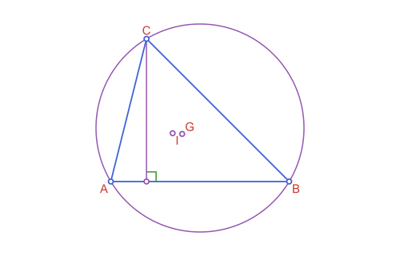
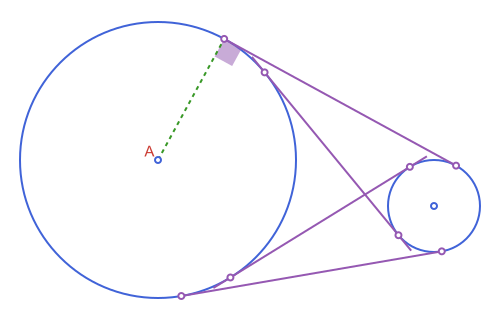

Apollonius.jl
Apollonius.jl is a Julia toolkit for planar Euclidean geometry, and a system for illustrating it. It gives you real geometric objects (points, segments, lines, circles, triangles, conics, and the constructions you build with them: midpoints, intersections, projections, reflections, rotations, triangle centers, tangency problems) instead of raw numbers. Because those objects stay geometric all the way through, the same package can also draw them: load Luxor.jl alongside Apollonius and every type here gets a path method, plus a @prepare_to_picture macro that sizes and centers a whole figure for you, so a construction and its illustration come from the same code instead of two separate ones that can drift apart.
Every exported type is its own struct, prefixed AP (APPoint, APCircle2, APTriangle, ...) and organized into a real abstract type hierarchy, with genuine "is-a" relationships instead of loose, unrelated structs. More on that below; first, two examples.
Example: a triangle and its centers
using Apollonius
a, b, c = APPoint(0.0, 0.0), APPoint(5.0, 0.0), APPoint(1.0, 4.0)
t = APTriangle(a, b, c)
centroid(t) # center of mass[2.0, 1.3333333333333333]circumcircle(t) # circle through a, b, cAPCircle2([2.5, 1.5], 2.9154759474226504)incenter(t) # center of the inscribed circle[1.7331256880626402, 1.3531836465727276]l = APLine(a, b)
perpendicular_through(l, c) # altitude from cAPLine([1.0, 4.0] -> [1.0, 9.0])intersection(l, circumcircle(t))2-element Vector{APPoint{2, Float64}}:
[0.0, 0.0]
[5.0, 0.0]
See script
using Apollonius, Luxor
import Luxor: julia_red, julia_blue, julia_green, julia_purple
lxm = @prepare_to_picture! width=500 height=320 margin=30 begin
a, b, c = APPoint(0.0, 0.0), APPoint(5.0, 0.0), APPoint(1.0, 4.0)
t = APTriangle(a, b, c)
circ = circumcircle(t)
G = centroid(t)
I = incenter(t)
foot = projection(c, APLine(a, b))
height = APSegment(c, foot)
right = APAngle2(foot, b, c)
end
Drawing(lxm.width, lxm.height, :svg)
Luxor.fontsize(15)
#circle and height
sethue(julia_purple)
path([circ, height], action=:stroke)
#angle mark
sethue(julia_green)
path(right; as=:rarc, radius=12, action=:stroke)
#triangle
sethue(julia_blue)
path(t, action=:stroke)
#points
sethue("white")
path([a, b, c], action=:fillpreserve)
sethue(julia_blue); strokepath()
sethue("white")
path([G, I, foot], action=:fillpreserve)
sethue(julia_purple); strokepath()
#labels
sethue(julia_red)
label("A", :SW, a, offset=8)
label("B", :SE, b, offset=8)
label("C", :NW, c, offset=8)
label("G", :NE, G, offset=8)
label("I", :SW, I, offset=8)
finish()
preview()Example: the same idea, drawn
The four common tangent lines of two circles, sized and centered automatically by @prepare_to_picture, with the points of tangency marked, the angle between the two external tangents shaded, and one radius dashed in:

See script
using Apollonius, Luxor
import Luxor: julia_red, julia_blue, julia_green, julia_purple
lxm, lxo = @prepare_to_picture width=500 height=320 margin=20 begin
circle1 = APCircle2(APPoint(300.0, 300.0), 300.0)
circle2 = APCircle2(APPoint(900.0, 200.0), 100.0)
el1, el2 = external_tangent_lines(circle1, circle2)
il1, il2 = internal_tangent_lines(circle1, circle2)
ang = APAngle2(el1.p1, circle1.center, el1.p2)
end
(; circle1, circle2, el1, el2, il1, il2, ang) = lxo
pts = [el1.p1, el1.p2, el2.p1, el2.p2, il1.p1, il1.p2, il2.p1, il2.p2]
Drawing(lxm.width, lxm.height, :svg)
origin()
#circles
sethue(julia_blue)
path([circle1, circle2], action = :stroke)
#radius and angle
@layer begin
sethue(julia_green); setdash(:dash)
path(APSegment(circle1.center, el1.p1), action = :stroke)
setopacity(0.5)
path(ang, action = :fill, as = :rsector, radius = 20)
end
#lines
sethue(julia_purple)
path([il1, il2, el1, el2], action = :stroke)
sethue(julia_red); setdash(:solid)
label("A", :NW, circle1.center, offset=8)
sethue("white")
path(pts, action=:fillpreserve)
sethue(julia_purple); strokepath()
sethue("white")
path([circle1.center, circle2.center], action=:fillpreserve)
sethue(julia_blue); strokepath()
finish()
preview()Everything here (the circles, the tangent lines, the angle, the points) is a real Apollonius object right up until it's drawn. external_tangent_lines and internal_tangent_lines are ordinary geometry functions, usable on their own with no Luxor loaded at all. Continue to Drawing with Luxor.jl for the full picture: how @prepare_to_picture works, what path draws for each type, and the rest of the drawing-side functions.
The type hierarchy
APObject{Dim,T}
├── APLocus{Dim,T}
│ ├── APCurve{Dim,T}
│ │ ├── APLine{Dim,T}
│ │ ├── APRay{Dim,T}
│ │ ├── APSegment{Dim,T}
│ │ ├── APPolyline2{T}
│ │ ├── APCurvilinearPolyline2{T}
│ │ ├── APEquipollentVector{Dim,T}
│ │ ├── APParametricCurve2{T}
│ │ ├── APConic2{T}
│ │ │ ├── APCircle2{T}
│ │ │ ├── APEllipse2{T}
│ │ │ ├── APParabola2{T}
│ │ │ └── APHyperbola2{T}
│ │ └── APConicArc2{T}
│ │ ├── APCircularArc2{T}
│ │ ├── APEllipticArc2{T}
│ │ ├── APParabolicArc2{T}
│ │ └── APHyperbolicArc2{T}
│ └── APSet{Dim,T}
│ ├── APHalfPlane2{T}
│ ├── APAngle2{T}
│ ├── APStrip2{T}
│ └── APRegion{Dim,T}
│ └── APPolygon{Dim,T}
│ ├── APTriangle{Dim,T}
│ ├── APQuadrilateral{Dim,T}
│ ├── APStraightNgon{Dim,T}
│ ├── APCircularSector2{T}
│ ├── APCircularSegment2{T}
│ ├── APAnnularSector2{T}
│ ├── APInterstice2{T}
│ ├── APCurvilinearTriangle2{T}
│ ├── APCurvilinearQuadrilateral2{T}
│ └── APCurvilinearNgon2{T}
├── APPoint{Dim,T}
├── APVector{Dim,T}
└── APBoundingBox{Dim,T}
APTransform{T}
└── APAffineMap{T}APTriangle, APQuadrilateral, APCircularSector2 and every other closed shape is an APPolygon, so area/perimeter/centroid/is_convex/point_in_polygon are defined once, generically, not reimplemented per type. See each abstract type's own docstring (APObject, APLocus, APCurve, APSet, APRegion, APPolygon, APTransform) for what belongs where and why.
t = APTriangle(APPoint(0.0, 0.0), APPoint(1.0, 0.0), APPoint(0.0, 1.0))
t isa APPolygon, t isa APRegion, t isa APSet, t isa APLocus, t isa APObject # (true, true, true, true, true)
s = APSegment(APPoint(0.0, 0.0), APPoint(1.0, 1.0))
s isa APCurve, s isa APLocus # (true, true): not an APRegion, a segment isn't a closed shape
ang = APAngle2(APPoint(0.0, 0.0), APPoint(1.0, 0.0), APPoint(0.0, 1.0))
ang isa APSet, ang isa APRegion # (true, false): unbounded, so an APSet but not an APRegion
m = APAffineMap(1.0, 0.0, 0.0, 1.0, 0.0, 0.0)
m isa APTransform, m isa APObject # (true, false): APTransform is its own separate hierarchyWhere to go next
- Conventions & FAQ for angles, orientation, naming,
==versus≈, and the two rules that govern drawing. - Workflow: From Construction to Figure for the order of the steps that turns a construction into a figure, and what goes wrong when it is broken.
- Drawing with Luxor.jl for
path,@prepare_to_picture, and everything else this package adds for illustration. - Marks, Labels & Decorations for equality marks, arrowheads, braces, label placement, guides and grids, and Compass & Ruler Constructions for figures that show the compass traces.
- Points, Lines & Rays: Creating Them, Circles: Basics, Triangles: The Classical Centers, Tangency & Apollonius Problems, Polygons: Measurements & Operations and Conics: Ellipse, Parabola & Hyperbola for a guided tour of the geometry itself, with worked examples.
- Unbounded Regions: Half-Planes, Strips & Angles, Affine Maps and Transforming in Bulk: Macros for half-planes and strips, the affine transformations, and the macros that apply a transform to a whole block of shapes.
- The README for the short version, and API Reference for every exported function and type.